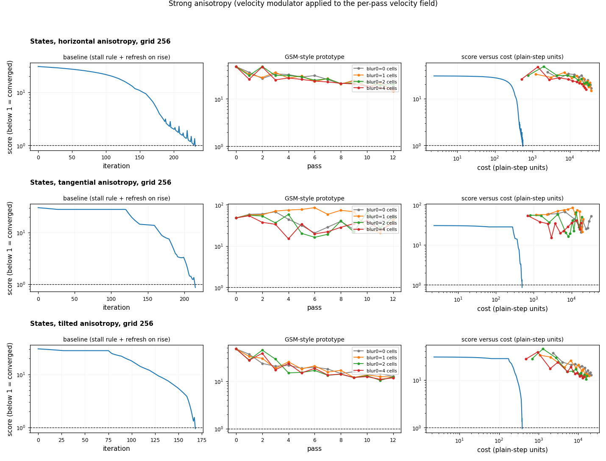
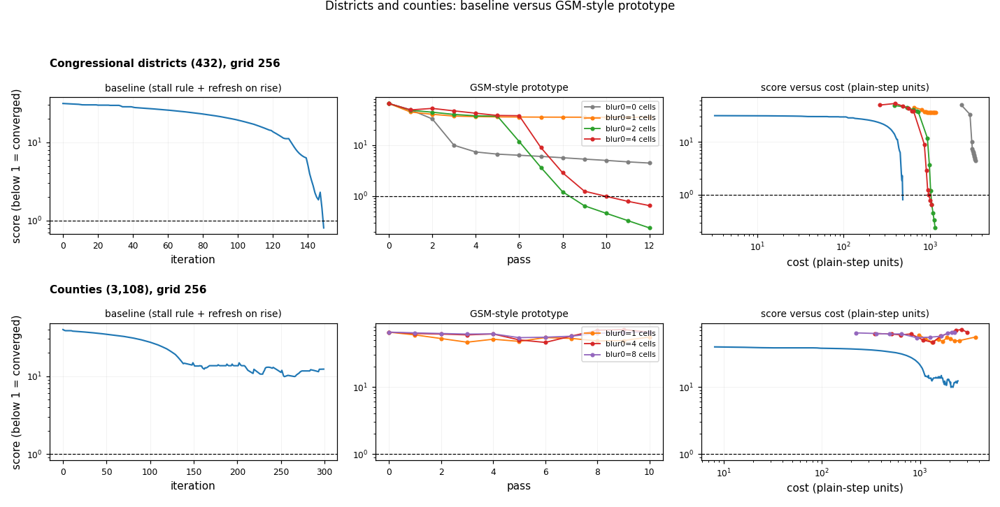
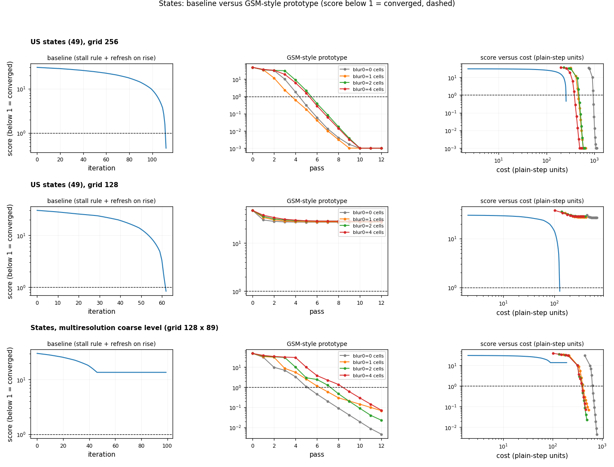
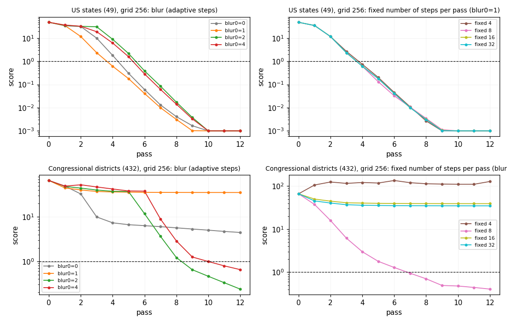

Quick preview of whether a Gastner-Seguy-More style integrator (rasterize, one Poisson solve, carry all vertices along a prescribed linear density path, repeat) looks promising compared with the current stall rule and refresh-on-rise stack. It converges on states and, with a blur of 2 to 4 cells, on districts, removes the sawtooth and fixes the coarse multiresolution plateau; it fails on counties and with velocity modulators, and loses regions with no grid cell centre at grid 128.
A preview, not a solver: one run per cell, one machine, load average 0.2 to 7 (listed per row in tables.md; the districts, counties and anisotropy rows ran at load 1 to 3). Wall times are indicative; the cost model is the primary metric. Regenerate figures and tables.md with uv run python make_figures.py; the runs come from scripts/run_case.py (committed on the branch under experiments/gsm_preview/).
scripts/gsm_proto.py, adapted from the talk-work prototype (scripts/proto_gsm.py). One pass: rasterize the current polygons with the library rasterizer, optionally blur the density (sigma blur0 * 0.5^pass cells, mean preserved), one FFT Poisson solve (v = grad phi, laplace phi = rho - rho_bar), then carry all vertices from t = 0 to 1 with an explicit midpoint integrator through v(x, t) = grad phi(x) / rho(x, t), rho(x, t) = rho_bar + (1 - t)(rho(x, 0) - rho_bar), with adaptive steps (error tolerance 0.02 cells) or a fixed number of steps. No stall rule, no refresh logic, no per-pass step size. A pass costs one rasterization plus one FFT (the field-recompute ratio of the other pages: 12 plain steps for states at grid 256, 9.2 at 128, 20.9 for districts, 47.5 for counties) plus the vertex-velocity evaluations, counted as one plain step each (an adaptive step is 2 evaluations, a rejected step is 2 too).
Accuracy is measured from the output geometries: linear relative error of area shares, |a_i / sum(a) / (t_i / sum(t)) - 1|. The score is the one of the other pages (mean and max log2 error over the default tolerances 5 % and 10 %; below 1 = converged). Validity is shapely.is_valid; self-intersections are the invalid reasons that say so.
The first pass below score 1 is used for the GSM cost; the passes after it keep refining. Baseline = full run. Cost is in plain-step units: iterations plus recomputes times the ratio for the baseline; passes times the ratio plus vertex-velocity evaluations for GSM.
| case | variant | passes / iterations | velocity fields | cost | wall s | mean % | max % | regions > 10 % | invalid | stability |
|---|---|---|---|---|---|---|---|---|---|---|
| states 256 | baseline | 113 | 12 | 257 | 0.5 | 0.31 | 4.4 | 0 | 0 | monotone |
| states 256 | GSM blur 1, pass 4 | 4 | 4 | 466 | 1.5 | 0.27 | 5.7 | 0 | 0 | monotone |
| states 256 | GSM blur 1, pass 12 | 12 | 12 | 658 | 1.9 | 0.00 | 0.0 | 0 | 0 | monotone |
| states 128 | baseline | 63 | 7 | 127 | 0.3 | 1.19 | 7.8 | 0 | 0 | monotone |
| states 128 | GSM, any blur | 12 | 12 | 418 (blur 1) | 1.2 | 2.1 | 92.9 | 1 (DC) | 0 | monotone, stuck at DC |
| states, multires coarse 128x89 | baseline | 100, stalled | 10 | 192 | 0.2 | 28.7 | 264 | 21 of 49 | 1 | plateau at score 13.6 |
| states, multires coarse | GSM blur 0, pass 6 | 6 | 6 | 657 | 2.2 | 0.00 at pass 12 | 0.0 | 0 | 0 | monotone |
| states, multires coarse | GSM blur 1/2/4, pass 12 | 12 | 12 | 424 / 408 / 403 (first < 1 at pass 7 / 8 / 9) | 1.2 to 1.4 | 0.02 to 0.04 | 0.2 to 0.7 | 0 | 0 | monotone |
| districts 256 | baseline | 150 | 16 | 484 | 1.2 (load 1.8) | 1.07 | 8.0 | 0 | 24 | 2 small rises |
| districts 256 | GSM blur 2, pass 9 | 9 | 9 | 1,050 | 9.2 | 0.11 at pass 12 | 2.3 | 0 | 19 | monotone |
| districts 256 | GSM blur 4, pass 10 | 10 | 10 | 973 | 8.2 | 0.16 at pass 12 | 6.4 | 0 | 16 | 1 small rise |
| districts 256 | GSM blur 0 / 1 | 12 | 12 | 3,357 / 1,161 | 32 / 9.6 | 0.47 / 0.49 | 53 / 97 | 0 | 144 / 44 | stuck, never below 1 |
| counties 256 | baseline | 300, stalled | 45 | 2,438 | 6.4 | 58 | 2,118 | 69 % | 158 | best score 9.9, ends 12, 35 rises |
| counties 256 | GSM blur 1 / 4 / 8 | 10 | 10 | 3,671 / 3,003 / 2,237 | 70 / 54 / 38 | 61 to 64 | 4,595 to 8,390 | 72 % | 275 to 968 | no progress, score 46 to 66 |
| anisotropy horiz / tang / tilt | baseline | 233 / 216 / 169 | 27 / 23 / 18 | 557 / 492 / 385 | 0.6 to 0.7 | 1.1 to 1.7 | 8.7 to 8.8 | 0 | 0 to 1 | converged, horizontal run has spikes |
| anisotropy | GSM with modulator on the per-pass field | 12 | 12 | 13,800 to 37,100 | 46 to 128 | 52 to 95 | 113 to 592 | 84 to 100 % | 30 to 45 | diverges |
Notes:
map_coordinates), which is not tuned; counting evaluations as plain steps is an approximation either way.scripts/run_case.py) but wrong in principle. v/rho only equalizes the density along the prescribed path if rho v stays curl-free with fixed divergence; a direction-dependent gain breaks that, and the run diverges (14,000 to 37,000 evaluations). The Dx/Dy of the preset are not used by the prototype. A GSM version of anisotropy would need the tensor in the Poisson solve (the Dx/Dy route), not a post-hoc map.DC contains no cell centre at grid 128, at the multiresolution 128 x 89 grid, and at grid 256 (dc_cells0 is 0 for all three). The rasterized density never sees a region without a cell centre, so the flow does not equalize it directly. The outcomes differ by case:
| case | baseline DC error | GSM DC error |
|---|---|---|
| states 128 | 0.05 % | 92 to 94 % (all 8 variants) |
| multiresolution coarse | 96 % | 0 to 0.7 % |
| states 256 | 0.09 % | 0 % |
I did not investigate why DC is equalized in some runs (untested guess: neighbors push DC until a cell centre falls inside, after which it is rasterized and corrected). This is a grid-phase effect for both methods, so GSM does not remove the need for area-weighted rasterization (issue 95) or a minimum-resolution check (issue 93), but it does remove the baseline's stall at the multiresolution plateau in this example.
laplace phi = rho - rho_bar, then v/rho(t)), per the issue 75 addendum, not the paper's exact Eq. 2 to 7.A full experiment looks worth doing, scoped as follows (judgment from this preview, not a measurement of effort):
algorithm.py (a second loop in passes, vertex integration, no recompute-every logic), MorphOptions (method selector, blur, steps), convergence/stall semantics (no STALLED; needs a stopping rule and a lost-region guard), velocity modulators (DirectionalTensor, BoundaryDecay, Smooth break the prescribed-path assumption: they would move into the Poisson solve or be dropped for this method), snapshots and animation (one snapshot per pass; the t = 0 to 1 path could be sampled), co-advection of landmarks and displacement_coords (the same velocity function can carry them; not tested), and the licence question for go_cart / cartogram-cpp if any code is ported (this prototype is written from the published idea).
The modulator experiment: baseline converges in 169 to 233 iterations, the prototype wanders between 10 and 90.

Districts (blur 2 and 4 converge, blur 0 and 1 stop at a lost region) and counties (neither method converges).

States at grid 256, 128 and the multiresolution coarse level; left baseline score per iteration, middle GSM score per pass (one color per blur), right score versus cost in plain steps (the baseline's cost axis is stretched linearly over iterations, an approximation). The GSM traces fall monotonically from 45 to below 1 in 4 to 9 passes and keep falling by about a factor of 3 per pass; there is no sawtooth. At grid 128 they flatten at 27 (DC).

Left: blur 0 to 4 cells (adaptive steps). Right: fixed number of steps per pass (4 to 32) at blur 1.